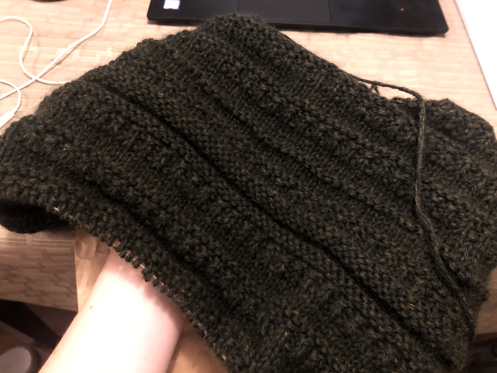
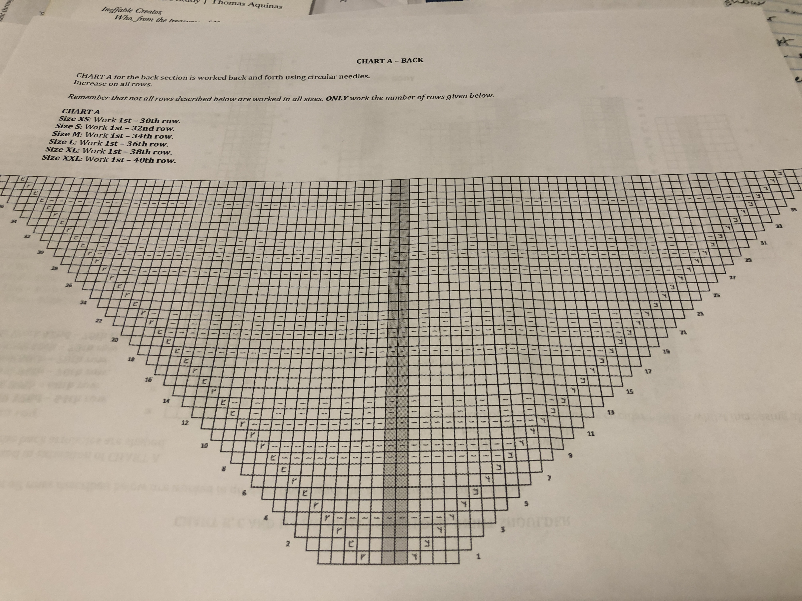

| Symbol | Meaning |
|---|---|
| blank | knit on right side and purl on wrong side |
| dash | purl on right side and knit on wrong side |
| angles | knit two together (direction of the angle matters) |
Why Knitting is Just Binary
Knitting consists of two stitches, knitting and purling.
One of these makes a little bump in the front of your knitting, and one makes a bump in the back.
Like ones and zeroes, right?
It would be so cool to try to knit a program
in binary form, but it probably wouldn't look
nice. It would make a pretty neat blanket though.
The photo below is a picture of a knitting diagram
where the stitches are indicated by symbols,
which looks exceptionally like a binary pattern
except for some of the special stitches for
increasing and decreasing.
